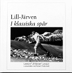

"Lill-Järven" Nils Olov Lennart Larsson
Skidåkare, olympier, skidinstruktör för landslaget, idrottslärare, säljare, författare.
| Född: | 1930-02-07 Granbergsträsk, Jörns fs, Jörns sn. [1] | Hennes son utom äktenskap. |
|---|
| Vigsel: | 1960-01-03 Jörns fs, Jörns kn. [2] |
|---|
| Levde: | 1961 Ängesv 4 A, Skellefteå, Skellefteå sfs, Skellefteå kn. [2] |
|---|
| Levde: | 1969 Skellefteå, S:t Olovs fs, Skellefteå kn. [3] |
|---|
| Levde: | 1971 Gruvg 26, Skellefteå, Sankt Olovs fs, Skellefteå kn. [4] |
|---|
| Levde: | 1974 Lövg 6, Älvsbyn, Älvsby fs, Älvsbyns kn. [3] |
|---|
| Levde: | 1981 Haspen 7, Fjärdingsmansv 3, Lycksele, Lycksele fs, Lycksele kn. [5] |
|---|
| Levde: | 1991 Haspen 7, Fjärdingsmansv 3, Lycksele, Lycksele fs, Lycksele kn. [6] |
|---|
| Levde: | 2018 Skellefteå, S:t Olovs fs, Skellefteå kn. [7] |
|---|
| Barn: |
|---|
| Agneta Anna Christina Larssson (1967 - ) |
Noteringar
Lennart Larsson, "Lill-Järven"
Född: 7 februari 1930 i Granbergsträsk, Jörn. Klubbar och aktiva skidår: SK Järven 1946-1964, IFK Umeå 1965-66. Debut i SM: 1952 i Umeå Stor Grabb nr 42 inom svensk skidsport
Lennarts anlag var utomordentliga och hans ambition hög. Detta tillsammans med att SK Järven verksamhet fungerade bra var förutsättningar, som formade en smidig, snabb och elegant tekniker, som också var stark och uthållig. Han gav klubben "Järven Jörn" ett ansikte utåt i hela skidvärlden!
Enligt Lennarts egen bedömning är stafettguldet vid VM i Lahtis 1958 hans största framgång. Han åkte andra sträckan, som han vann, och slog världsstjärnorna Anikin och Tiainen. Sitt livs lopp anser han, att han gjorde på 50 km vid OS 1960 i Squaw Valley. Han bröt ena skidan efter två kilometer, vände tillbaka cirka 100 m, fick låna en ovallad skida och åkte med den till kontrollen vid 10 km, där han bytte till en bättre vallad skida. På den incidenten förlorade han minst två minuter, men åkte i fortsättningen som en furie och avancerade från sjuttonde till fjärde plats. Tidsavståndet till bronsmedalj var 41,2 sek.
Lennarts OS-meriter:
Cortina 1956: 8:e plats på både 15 km och 30 km och 3:a på startsträckan i stafetten. Laget blev sexa
Squaw Valley 1960: 5:a på 30 km och 4:a på 50 km. Han åkte 3:e sträckan på stafetten där Sverige blev 4:a.
Hans meriter f.ö. är imponerande 12 starter för landslaget i Svenska skidspelen med segern på 15 km i Nässjö 1955 som topp och stafettguld 1961 och 62.
Det två sista åren, 1965 och 1966 tävlade "Lill-Järven" för IFK Umeå och vann fyra lag-SM. Det närmaste han var en individuell SM-titel, var 1962 i Sollefteå. På 15 km startade han i par med Assar Rönnlund, drog nästan hela loppet men blev slagen av Assar i spurten med en knapp skidlängd. Fyra silver och fyra brons skidade han hem individuellt i SM. I stafett blev det som bäst två andraplatser och en tredjeplats i SK Järvens färger.
Under åren 1949-1966 åkte Lennart Larsson 394 tävlingar, vann 74 och var bland de tre bästa 188 gånger. Han besegrade Assar Rönnlund 46 gånger och Sixten Jernberg 23 gånger. "Lill-Järven" är Skellefteå kommuns mest framgångsrike manlige längdskidåkare.
Efter den tjugo år långa tävlingskarriären, varav tio år i svenska landslaget, satsade "Lill-Järven" på vidareutbildning. Under sitt sista tävlingsår 1965/66 studerade på han Bosöns idrottsfolkhögskola.
Åren 1966-1972 arbetade han som landslagstränare och delvis jämsides med detta uppdrag utbildade han sig åren 1971-73 på GIH till idrottslärare med längdåkning som specialgren. Skidinstruktör för landslaget vid bl.a. OS 68,72,76, 80 och vid VM 70,78,82.
____________________________________________
"Lill-Järven i klassiska spår", Författare: Lennart Larsson i samarbete med Robert Tedestedt
Förlag Ord & Visor Förlag
Genre Sport, motion och friluftsliv
Format Inbunden
Språk Svenska
Antal sidr 216
Vikt 908 gr
Utgiven 2019-02-14
ISBN 9789187949906
Lennart Lill-Järven Larsson fick ett par hemsnickrade skidor som liten gosse. Det blev kärlek vid första stavtaget. En kärlek som hållit i sig.
På nära håll har Lill-Järven följt skidsportens utveckling från Utterns dagar till dagens kanoner med Kalla i spetsen. Under 1950- och 1960-talet tävlade han mot de bästa i världen, och han blev själv världsmästare i stafett. Efter den aktiva karriären utsågs han till Sveriges förste förbundskapten för längdåkarna och därefter skidtränare.
Här berättar Lill-Järven om sitt livs skidlopp. Det tar sin början i byn Granbergsträsk i Jörn i Västerbotten. Med oslagbart minne för detaljer får vi möta barnmorskor och skolbarn, kolare och timmerhuggare, tjuvjägare och vallaexperter, skidkungar och skiddrottningar.
Personhistoria
| Årtal | Ålder | Händelse |
|---|
| 1930 |
|
Födelse 1930-02-07 Granbergsträsk, Jörns fs, Jörns sn [1] |
| 1932 |
2 år |
Systern Hjördis Juliann Larsson föds 1932-04-26 Granbergsträsk, Jörns fs, Jörns sn [8] |
| 1934 |
4 år |
Makan Karin Ann Margareta Lindberg föds 1934-04-23 Jörns fs, Jörns sn [4] |
| 1935 |
5 år |
Brodern Stig Lars Henning Larsson föds 1935-09-13 Granbergsträsk, Jörns fs, Jörns sn [9] |
| 1947 |
17 år |
Systern Hjördis Juliann Larsson dör 1947-09-11 Granbergsträsk, Jörns fs, Jörns sn [10] |
| 1960 |
29 år |
Vigsel Karin Ann Margareta Lindberg 1960-01-03 Jörns fs, Jörns kn [2] |
| 1961 |
|
Levde Karin Ann Margareta Lindberg 1961 Ängesv 4 A, Skellefteå, Skellefteå sfs, Skellefteå kn [2] |
| 1967 |
37 år |
Dottern Agneta Anna Christina Larssson föds 1967-07-30 Skellefteå, Sankt Olovs fs, Skellefteå kn [4] |
| 1969 |
|
Levde Karin Ann Margareta Lindberg 1969 Skellefteå, S:t Olovs fs, Skellefteå kn [3] |
| 1971 |
|
Levde Karin Ann Margareta Lindberg 1971 Gruvg 26, Skellefteå, Sankt Olovs fs, Skellefteå kn [4] |
| 1974 |
|
Levde Karin Ann Margareta Lindberg 1974 Lövg 6, Älvsbyn, Älvsby fs, Älvsbyns kn [3] |
| 1981 |
|
Levde Karin Ann Margareta Lindberg 1981 Haspen 7, Fjärdingsmansv 3, Lycksele, Lycksele fs, Lycksele kn [5] |
| 1985 |
55 år |
Brodern Stig Lars Henning Larsson dör 1985-08-11 Signalg 11, Älvsbyn, Älvsby fs, Älvsbyns kn [11] |
| 1991 |
|
Levde Karin Ann Margareta Lindberg 1991 Haspen 7, Fjärdingsmansv 3, Lycksele, Lycksele fs, Lycksele kn [6] |
| 1996 |
66 år |
Modern Ellen Julia Brännström dör 1996-12-15 Furug 4 D, lgh 119, Jörn, Jörns fs, Skellefteå kn [12] |
| 1997 |
67 år |
Fadern Seth Artur Larsson dör 1997-02-19 Furug 4 D, lgh 119, Jörn, Jörns fs, Skellefteå kn [13] |
| 2018 |
|
Levde Karin Ann Margareta Lindberg 2018 Skellefteå, S:t Olovs fs, Skellefteå kn [7] |
Dokument
Källor
| [1] | Jörn (AC) AIIa:8 (1926-1934) Bild: 1320 Sida: 586 |
| |
| | |
| [2] | Mtl Sveriges befolkning 1960 |
| |
| | |
| [3] | Mtl Sveriges befolkning 1975 |
| |
| | |
| [4] | Mtl Västerbottens län 1971 |
| |
| | |
| [5] | Mtl Västerbottens län 1981 |
| |
| | |
| [6] | Mantalslängd 1991, Västerbottens län |
| |
| | |
| [7] | www.ratsit.se/sok/avancerat/person |
| |
| | |
| [8] | Jörn (AC) AIIa:8 (1926-1934) Bild: 1280 Sida: 582 |
| |
| | |
| [9] | Statistiska Centralbyrån (SCB) - 1940 års folkräkning H1AA:539 (1940) Bild: 3840 Sida: 17 |
| |
| | |
| [10] | PA DB, SDSDB7_11233037 |
| |
| | |
| [11] | RTB 85, SPAR 90, SDB7_05148312 |
| |
| | |
| [12] | RTB 96, SPAR 92f, SPAR 97, SDB7_02400122 |
| |
| | |
| [13] | RTB 97, SPAR 92f, SPAR 97, SDB7_02308857 |
| |
|
|
2019. Lennart "Lill-Järven" Larsson
I bakgrunden Robert Tedestedt.
Foto: LEIF STENING
En bok om och av ”Lill-Järven”
Legendariska skidåkaren Lennart ”Lill-Järven” Larsson började i unga år göra anteckningar från sitt liv och tillvaron.
– Att det skulle bli en bok var dock aldrig tanken, säger Lennart som tillsammans med Robert Tedestedt nu gett ut ”I klassiska spår”.
www.vasterbottningen.se/sport/en-bok-om-och-av-lill-jarven/repscd!lNWB4HPFEhqvQOPqWDOgA/
|
| |
|
2019. Skellefteå
Författarträff om och med Lennart "Lill-Järven" Larsson
Välkommen att lyssna till Robert Tedestedt och Lennart "Lill-Järven" Larsson som berättar utifrån sin aktuella bok "I klassiska spår". Ingen föranmälan behövs.
Lennart Lill-Järven Larsson fick ett par hemsnickrade skidor som liten gosse. Det blev kärlek vid första stav¿taget. En kärlek som hållit i sig.
På nära håll har Lill-Järven följt skidsportens utveckling från Utterns dagar till dagens kanoner med Kalla i spetsen. Under 1950- och 1960-talet tävlade han mot de bästa i världen, och han blev själv världsmästare i stafett. Efter den aktiva karriären utsågs han till Sveriges förste förbundskapten för längd¿åkarna och därefter skidtränare.
Här berättar Lill-Järven om sitt livs skidlopp. Det tar sin början i byn Granbergsträsk i Jörn i Västerbotten. Med oslagbart minne för detaljer får vi möta barnmorskor och skolbarn, kolare och timmerhuggare, tjuvjägare och valla¿experter, skidkungar och skiddrottningar.
|
| |
|  |
2019. Lennart Lill-Järven Larsson fick ett par hemsnickrade skidor som liten gosse. Det blev kärlek vid första stavtaget. En kärlek som hållit i sig.
På nära håll har Lill-Järven följt skidsportens utveckling från Utterns dagar till dagens kanoner med Kalla i spetsen. Under 1950- och 1960-talet tävlade han mot de bästa i världen, och han blev själv världsmästare i stafett. Efter den aktiva karriären utsågs han till Sveriges förste förbundskapten för längdåkarna och därefter skidtränare.
Här berättar Lill-Järven om sitt livs skidlopp. Det tar sin början i byn Granbergsträsk i Jörn i Västerbotten. Med oslagbart minne för detaljer får vi möta barnmorskor och skolbarn, kolare och timmerhuggare, tjuvjägare och vallaexperter, skidkungar och skiddrottningar.
|
|
{kind=link}
{kind=link}
{kind=link}